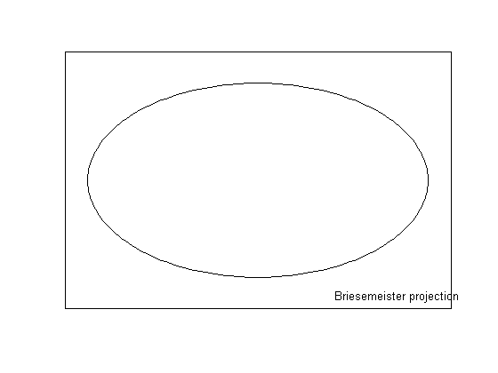
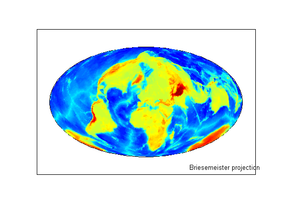
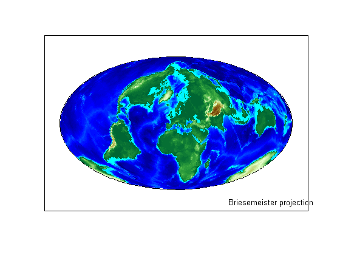
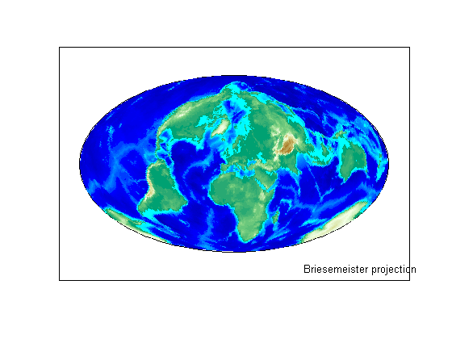
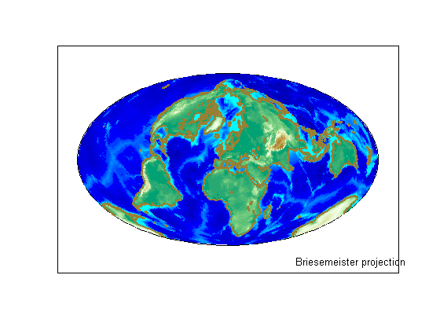
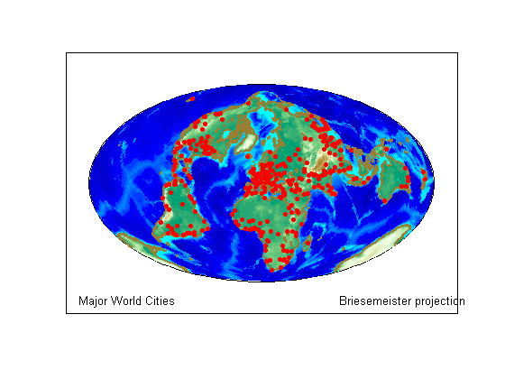

Creating an Interactive Map for Selecting Point Features
This demo constructs a map of major world cities enhanced with coastlines and terrain. It uses the modified azimuthal Briesemeister map projection. Then it allows a user to interactively pick a location and automatically highlights the nearest city, displaying its name and coordinates.
Contents
Step 1: Set up a Map Axes Object and Render a Global Elevation Grid
Construct the axes.
figure('Renderer','zbuffer'); axesm bries text(1.2, -1.8, 'Briesemeister projection') framem('FLineWidth',1)
Load and display a 1-by-1-degree elevation grid.
load topo geoshow(topo, topolegend, 'DisplayType', 'texturemap')
Step 2: Improve the Terrain Display
Get a colormap appropriate for elevation.
demcmap(topo)
Make it brighter.
brighten(.5)
Step 3: Add Simplified Coastlines
Load global coastline coordinates.
load coast
Generalize the coastlines to 0.25-degree tolerance.
[rlat, rlon] = reducem(lat, long, 0.25);
Plot the coastlines in brown.
geoshow(rlat, rlon, 'Color', [.6 .5 .2], 'LineWidth', 1.5)
Step 4: Plot City Locations with Red Point Markers
Read a shapefile containing names of cities worldwide and their coordinates in latitude and longitude.
cities = shaperead('worldcities', 'UseGeoCoords', true);
Extract the point latitudes and longitudes with extractfield, and add them to the map.
lats = extractfield(cities,'Lat'); lons = extractfield(cities,'Lon'); geoshow(lats, lons,... 'DisplayType', 'point',... 'Marker', 'o',... 'MarkerEdgeColor', 'r',... 'MarkerFaceColor', 'r',... 'MarkerSize', 3) text(-2.8,-1.8,'Major World Cities')
Step 5: Loop Forever while Selecting Cities
Now, using the map you've created, you can set up a simple loop to prompt for clicks on the map and display the name and coordinates of the nearest city. First, display instructions to the upper left of the map:
h1 = text(-2.8, 1.7, 'Click on a dot for its city name'); h2 = text(-2.8, 1.5, 'Press ENTER to stop');
Then, run the following, optional code block, to capture selected latitudes and longitudes with inputm. Use distance to calculate the great circle distance between each selected point and every city in the database. Determine index of the closest city, change the appearance of its marker symbol, and display the city's name and coordinates.
while true
[selected_lat,selected_lon] = inputm(1);
if isempty(selected_lat)
break % User typed ENTER
end
d = distance(lats, lons, selected_lat, selected_lon);
k = find(d == min(d(:)));
geoshow(cities(k).Lat, cities(k).Lon, ...
'DisplayType', 'point', ...
'Marker', 'o', ...
'MarkerEdgeColor', 'k', ...
'MarkerFaceColor', 'y', ...
'MarkerSize', 3)
delete(h1,h2)
h1 = text(-2.8, 1.7, cities(k(1)).Name);
h2 = text(-2.8, 1.5, ...
num2str([cities(k).Lat, cities(k).Lon],'%10.2f'));
end
disp('End of input.')